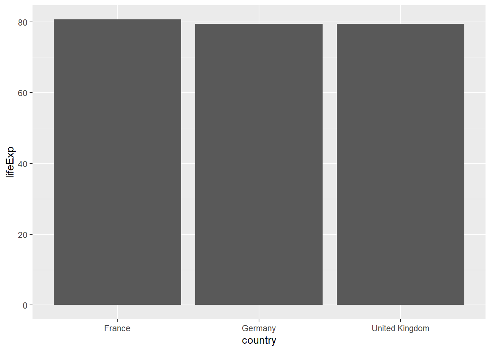

Chapter 8 INTRODUCTION TO ggplot2
8.1 Getting Started with ggplot2
8.1.1 Installation of ggplot2 and setting up the environment.
If you have not installed the ggplot2 package in your computer, then installing the package for the first time is achieved by writing the code install.packages(“ggplot2”). Once, the package has successfully been installed, you can set up the environment to use it in your analysis by writing the code library(“ggplot2”). Alternatively, ggpot2 package can be loaded by loading the tidyverse package which comes while attached with several packages where ggplot2 is among them.
8.2 Creating Basic Plots with ggplot2
We are using the gapminder dataset (https://www.gapminder.org/data) that has been put into an R package by Bryan (2017) so we can load it with library(gapminder). The dataset includes 1704 observations (rows) of 6 variables (columns: country, continent, year, lifeExp, pop, gdpPercap). country, continent, and year could be thought of as grouping variables, whereas lifeExp (life expectancy), pop (population), and gdpPercap (Gross Domestic Product per capita) are values. The years in this dataset span 1952 to 2007 with 5-year intervals (so a total of 12 different years). It includes 142 countries from 5 continents (Asia, Europe, Africa, Americas, Oceania). You can check that all of the numbers quoted above are correct with these lines:
## [1] 1952 1957 1962 1967 1972 1977 1982 1987 1992 1997 2002 2007## [1] 142## [1] Asia Europe Africa Americas Oceania
## Levels: Africa Americas Asia Europe Oceania8.2.1 Step-by-step instructions to create scatter plots, histograms, and bar charts using ggplot2
8.2.1.1 Scatter plots/bubble plots
Let’s create a new shorter tibble called gapdata2007 that only includes data for the year 2007. Let’s ask ggplot() to draw a point for each observation by adding geom_point()
# Filter only the year 2007 data
gapdata2007 <- gapminder %>%
filter(year == 2007)
#Plot a simple scatter plot
gapdata2007 %>%
ggplot(aes(x = gdpPercap, y = lifeExp)) +
geom_point()
8.2.1.2 Histograms
A histogram displays the distribution of values within a continuous variable. In the example below, we are taking the life expectancy (aes(x = lifeExp)) and telling the histogram to count the observations up in “bins” of 10 years (geom_histogram(binwidth = 10)

We can see that most countries in the world have a life expectancy of ~70-80 years (in 2007), and that the distribution of life expectancy globally is not normally distributed. Setting the binwidth is optional, using just geom_histogram() works well too - by default, it will divide the data into 30 bins.
8.2.1.3 Bar plots
There are two geoms for making bar plots - geom_col() and geom_bar() and the examples below will illustrate when to use which one. In short: if your data is already summarised or includes values for y (height of the bars), use geom_col(). If, however, you want ggplot() to count up the number of rows in your dataset, use geom_bar(). For example, with patient-level data (each row is a patient) you’ll probably want to use geom_bar(), with data that is already somewhat aggregated, you’ll use geom_col(). There is no harm in trying one, and if it doesn’t work, trying the other.
Let’s plot the life expectancies in 2007 in these three countries:
8.2.1.4 Box plots
Box plots are our go to method for quickly visualizing summary statistics of a continuous outcome variable (such as life expectancy in the gapminder dataset. Box plots include:
- the median (middle line in the box)
- inter-quartile range (IQR, top and bottom parts of the boxes - this is where 50% of your data is)
- whiskers (the black lines extending to the lowest and highest values that are still within 1.5*IQR)
- outliers (any observations out with the whiskers)
Let’s pot the boxplots of life expectancies within each continent in year 2007

8.2.2 Introduction to adding layers, modifying aesthetics, and utilizing facets for multi-panel plots
a) Adding layers
Going back to the scatter plot (lifeExp vs gdpPercap), let’s use continent to give the points some colour. We can do this by adding colour = continent inside the aes():Let’s also add a regression line to the scatter plot
gapdata2007 %>%
ggplot(aes(x = gdpPercap, y = lifeExp, colour = continent)) +
geom_point()+
geom_smooth(method = "lm", se = FALSE)## `geom_smooth()` using formula = 'y ~ x'b) Modifying aesthetics
This can be achieved by specifying further variables inside aes() or specifying aesthetics outside aes(). The main aesthetics (things we can see) are: x, y, colour, fill, shape, size, and any of these could appear inside or outside the aes() function.
Variables (so columns of your dataset) have to be defined inside aes(). Whereas to apply a modification on everything, we can set an aesthetic to a constant value outside of aes().

c) Utilizing facets for multi-panel plots Faceting is a way to efficiently create the same plot for subgroups within the dataset. For example, we can separate each continent into its own facet by adding facet_wrap(~continent) to our plot:
gapdata2007 %>%
ggplot(aes(x = gdpPercap, y = lifeExp, colour = continent)) +
geom_point(shape = 1) +
facet_wrap(~continent)
8.3 Customizing Plots in ggplot2
8.3.1 Advanced customization techniques including themes, scales, and coordinate systems.
a) Themes
Changing themes involves changing the default background from grey to a white background. Some of the built-in ggplot themes are theme_bw(), theme_dark(), theme_minimal() and theme_classic(). We are adding theme_bw() (“background white”) to give the plot a different look. We have also divided the gdpPercap by 1000 (making the units “thousands of dollars per capita”). Note that you can apply calculations directly on ggplot variables (so how we’ve done x = gdpPercap/1000 here). This is how ggplot() works - you can build a plot by adding or modifying things one by one.
gapdata2007 %>%
ggplot(aes(x = gdpPercap/1000, y = lifeExp, colour = continent)) +
geom_point(shape = 1) +
facet_wrap(~continent) +
theme_bw()
b) Scales
gapminder %>%
ggplot(aes(x = year, y = lifeExp, group = country, colour = continent)) +
geom_line() +
facet_wrap(~continent) +
theme_bw() +
scale_colour_brewer(palette = "Paired")
c) Coordinate systems
# Flipped coordinate system
gapdata2007 %>%
ggplot(aes(x = gdpPercap, y = lifeExp, colour = continent)) +
geom_point(shape = 1)+
coord_flip() +
labs(title = "Scatter Plot with Flipped Coordinate System",
x = "GDP Per Capita", y = "Life Expectancy") +
theme_bw()
8.3.2 Techniques for fine-tuning ggplot2 outputs to create publication-quality graphics
# Publication-quality scatter plot
ggplot(data = iris, aes(x = Sepal.Length, y = Sepal.Width, color = Species)) +
geom_point(alpha = 0.7, size = 3) +
labs(title = "Publication-Quality Scatter Plot",
x = "Sepal Length", y = "Sepal Width") +
theme_bw() +
theme(
plot.title = element_text(size = 14, face = "bold", hjust = 0.5),
axis.title = element_text(size = 12),
axis.text = element_text(size = 10),
legend.title = element_text(size = 12),
legend.text = element_text(size = 10)
) +
scale_color_manual(values = c("setosa" = "blue", "versicolor" = "green", "virginica" = "red"))